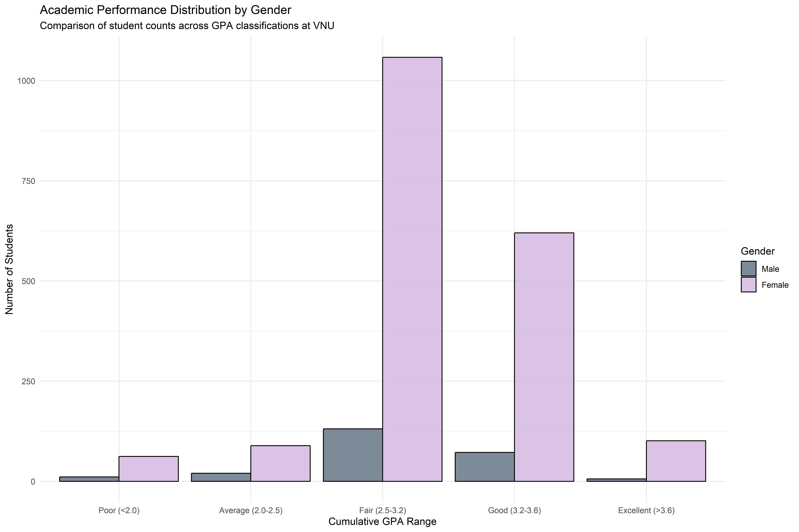
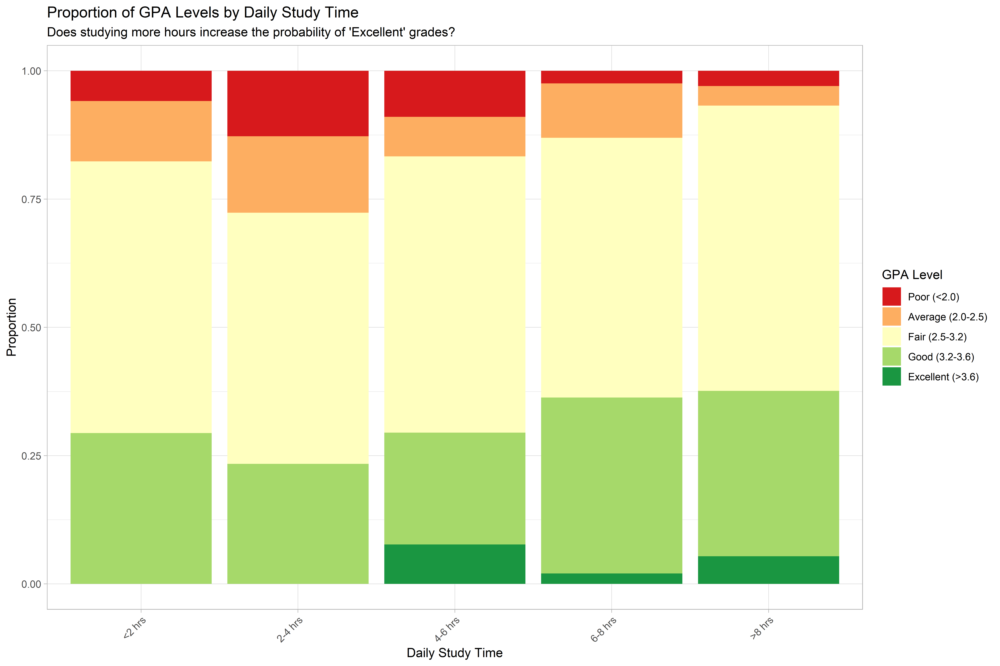
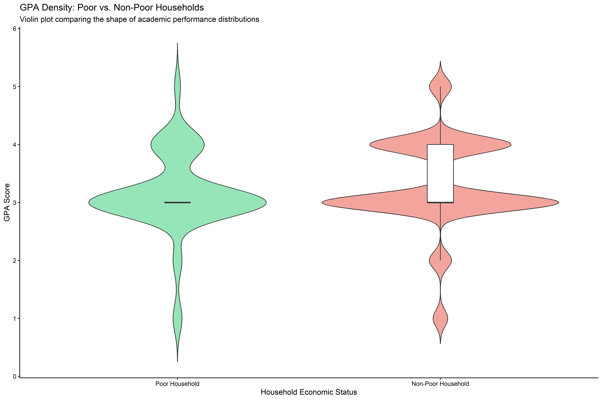
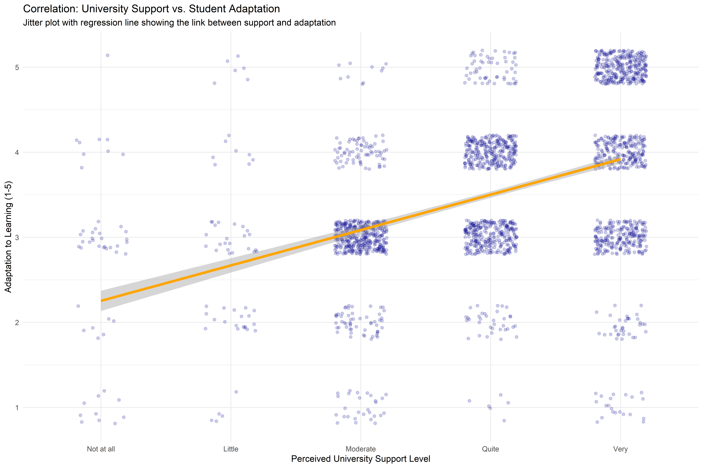
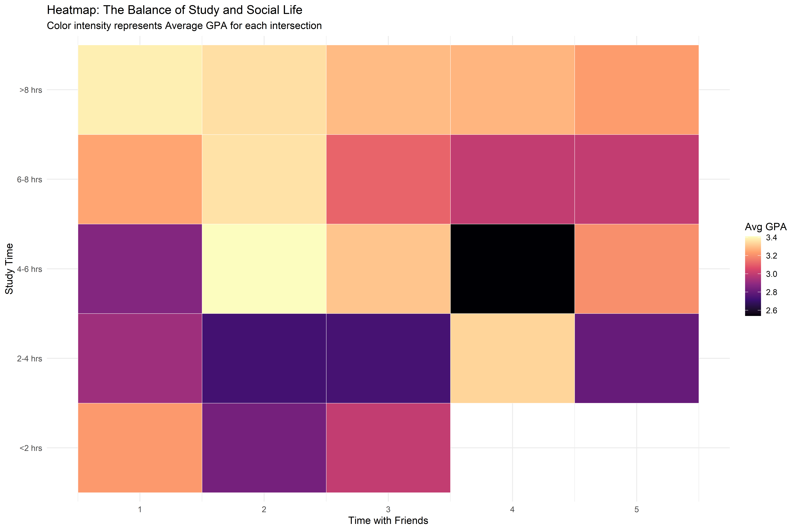
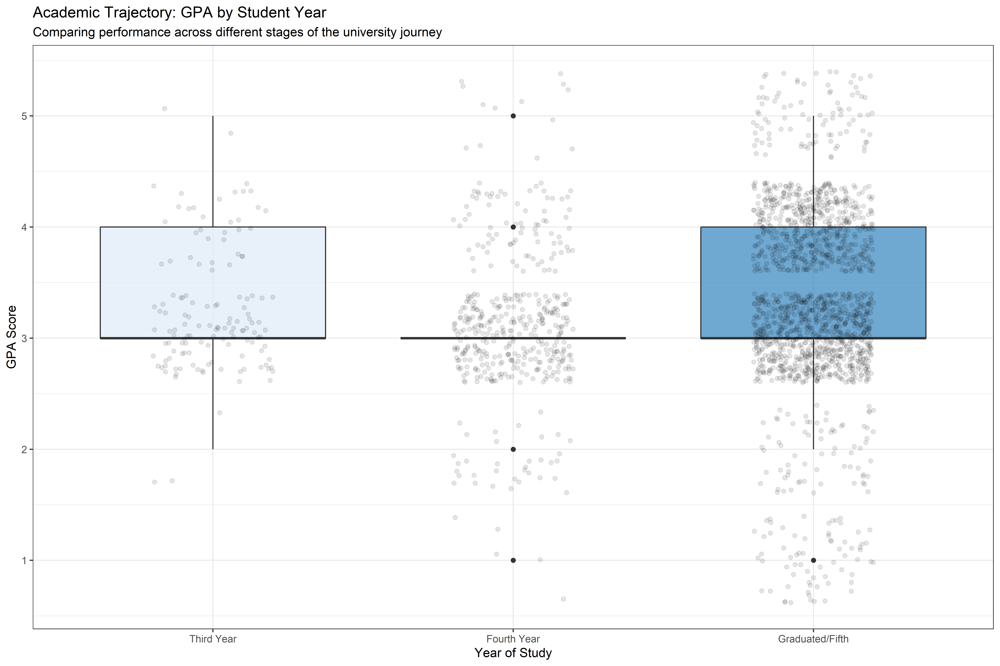
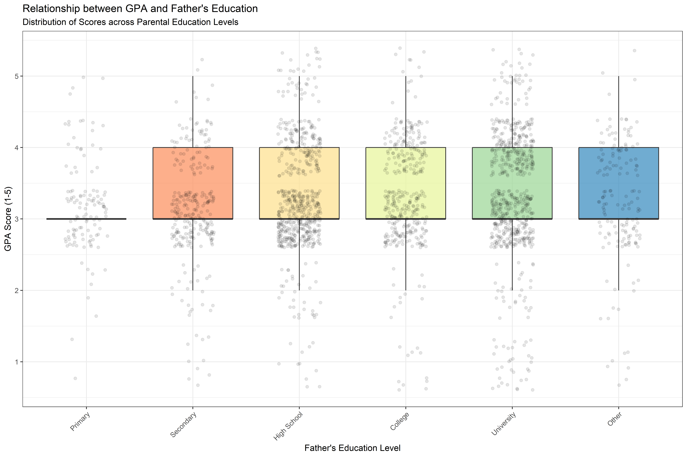
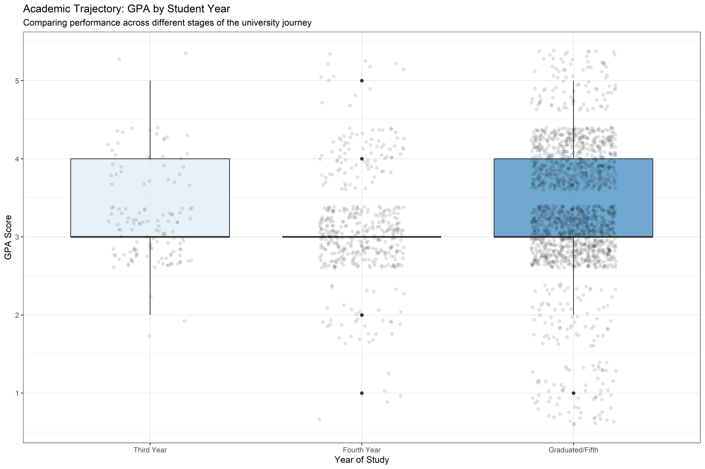
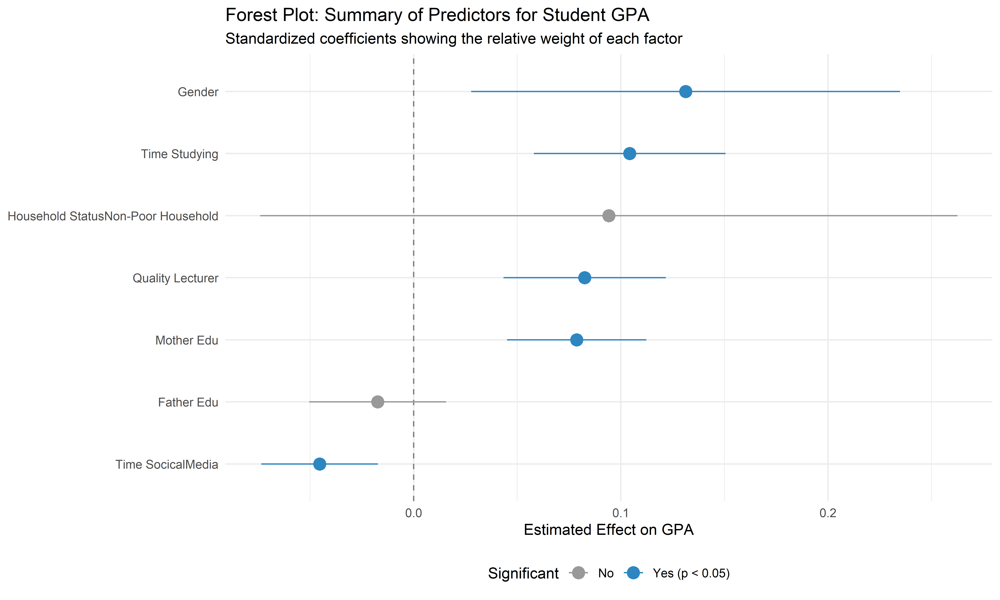

pacman::p_load(
tidyverse, # For data manipulation (dplyr, readr) and core plotting (ggplot2)
ggthemes, # For professional themes like theme_tufte() or theme_economist()
ggridges, # For ridgeline plots (comparing GPA distributions)
ggdist, # For visualizing distributions and uncertainty (dots and intervals)
patchwork, # For combining multiple plots into a single figure
scales, # For formatting axis labels (percentages, decimals)
broom, # For tidying statistical model outputs (used in the Forest Plot)
viridis, # For color-blind friendly color scales in heatmaps
corrplot, # For visualizing correlation matrices
GGally, # For advanced scatterplot matrices
ggpubr, # For publication-ready plots and statistical annotations
readxl
)Take-Home Exercises 1
Factors Affecting Learning Outcomes: Analysis of VNU Students
1 Introduction & Methodology
This report presents an analytical visualization of student performance at the University of Education, Vietnam National University, Hanoi. The analysis explores the impact of demographics, behavioral habits, and socioeconomic background on academic results (GPA).
1.1 Setting the Scene
The VNU Student Survey is a dataset collected by the University of Education - Vietnam National University, Hanoi. It gathers responses from 2,170 students and alumni (surveyed from March to June 2023) to identify the key factors affecting learning outcomes. The data covers diverse dimensions including demographics, socioeconomic status, behavioral habits (such as study time and social media usage), and institutional support.
1.2 The Task
In this exercise, Exploratory Data Analysis (EDA) methods and ggplot2 functions are used to explore: the distribution of VNU students’ academic performance (GPA), and the relationship between these outcomes with gender, socioeconomic status, study habits, and institutional support.
1.3 Load Packages
| Category | Packages | Purpose |
| Core & Cleaning | tidyverse, broom |
Importing data, mapping survey codes to labels, and converting model results into plotable data frames. |
| Distribution Analysis | ggridges, ggdist |
Creating the density curves and ridgeline plots to see where student performance clusters. |
| Aesthetics & Themes | ggthemes, scales, viridis |
Ensuring the charts look like professional policy reports with readable labels and high-contrast colors. |
| Complex Visuals | patchwork, GGally, corrplot |
Grouping several charts together (e.g., comparing Gender and Poverty side-by-side) and analyzing correlations. |
2 Data Section
2.1 Data Preparation & Wrangling
In this section, I load the raw data, verify its integrity, and recode categorical variables to ensure truthful visualization.
2.2 Loading and Inspecting Data
First, I load the dataset and perform an initial quality check to ensure there are no duplicate records or critical missing values that could skew the analysis. The dataset (Database paper.xlsx) used in this exercise is the original survey data file retrieved from the study “Dataset of factors affecting learning outcomes of students at the University of Education, Vietnam National University, Hanoi” (Le et al., 2025). I import this dataset as student_data.
# Import data
student_data <- read_xlsx("Database paper.xlsx")
# Check dataset dimensions
print(paste("Original Data Dimensions:", nrow(student_data), "rows,", ncol(student_data), "columns"))[1] "Original Data Dimensions: 2170 rows, 22 columns"# Check for duplicate rows
duplicate_count <- sum(duplicated(student_data))
print(paste("Number of duplicate rows:", duplicate_count))[1] "Number of duplicate rows: 226"# Check for missing values in key columns
missing_values <- colSums(is.na(student_data))
print("Missing values per column:")[1] "Missing values per column:"print(missing_values[missing_values > 0]) # Only print columns with missing datanamed numeric(0)2.3 Data Pre-Processing
I first take a look at the data structure. Since the raw data uses integer codes (e.g., 1 for “Poor”, 5 for “Excellent”), I must map these to meaningful factor levels based on the study’s Codebook to ensuring our visualizations are truthful and interpretable.
df_clean <- student_data %>%
mutate(
# --- Demographics ---
Gender_Label = factor(Gender, levels = c(1, 2), labels = c("Male", "Female")),
# Socioeconomic Status
Household_Status = factor(Poor_Stu, levels = c(1, 2),
labels = c("Poor Household", "Non-Poor Household")),
# --- Education Levels (Ordered Factors) ---
# I recode 1-6 based on the Codebook
Father_Edu_Label = factor(Father_Edu, levels = c(1, 2, 3, 4, 5, 6),
labels = c("Primary", "Secondary", "High School",
"College", "University", "Other"),
ordered = TRUE),
# --- Target Variable: GPA ---
# Create both a Label (Factor) and Numeric version for different plot types
GPA_Label = factor(GPA, levels = c(1, 2, 3, 4, 5),
labels = c("Poor (<2.0)", "Average (2.0-2.5)",
"Fair (2.5-3.2)", "Good (3.2-3.6)", "Excellent (>3.6)"),
ordered = TRUE),
GPA_Num = as.numeric(GPA),
# --- Habits & Support (Likert Scales) ---
Study_Time = factor(Time_Studying, levels = 1:5,
labels = c("<2 hrs", "2-4 hrs", "4-6 hrs", "6-8 hrs", ">8 hrs"),
ordered = TRUE),
Social_Media = factor(Time_SocicalMedia, levels = 1:5,
labels = c("<1 hr", "1-2 hrs", "2-3 hrs", "3-4 hrs", ">4 hrs"),
ordered = TRUE),
Uni_Support = factor(SupportOf_Uni, levels = 1:5,
labels = c("Not at all", "Little", "Moderate", "Quite", "Very"),
ordered = TRUE),
Lecturer_Quality = factor(Quality_Lecturer, levels = 1:5,
labels = c("Very Poor", "Poor", "Average", "Good", "Excellent"),
ordered = TRUE)
)
# Verify the structure of the cleaned data
glimpse(df_clean)Rows: 2,170
Columns: 31
$ Year <dbl> 5, 5, 5, 5, 5, 5, 5, 5, 5, 5, 5, 5, 5, 5, 5, 5, 5, …
$ Gender <dbl> 2, 1, 2, 2, 1, 2, 2, 2, 2, 2, 1, 2, 2, 2, 2, 2, 2, …
$ Policy_Stu <dbl> 2, 2, 2, 2, 1, 2, 2, 2, 2, 2, 2, 2, 2, 1, 2, 2, 2, …
$ Minority_Stu <dbl> 2, 2, 2, 2, 2, 2, 2, 2, 2, 2, 2, 2, 2, 2, 2, 2, 2, …
$ Poor_Stu <dbl> 2, 2, 2, 2, 2, 2, 2, 2, 2, 2, 2, 2, 2, 2, 2, 2, 2, …
$ Father_Edu <dbl> 4, 3, 4, 5, 2, 5, 6, 5, 5, 5, 3, 3, 3, 3, 3, 4, 5, …
$ Mother_Edu <dbl> 4, 3, 4, 4, 3, 5, 5, 4, 5, 4, 3, 3, 3, 4, 3, 4, 5, …
$ Father_Occupation <dbl> 2, 2, 1, 1, 3, 1, 1, 5, 1, 3, 3, 3, 3, 3, 2, 2, 4, …
$ Mother_Occupation <dbl> 3, 4, 2, 1, 3, 2, 4, 3, 1, 3, 3, 3, 3, 3, 2, 2, 4, …
$ Time_Friends <dbl> 2, 1, 1, 2, 1, 1, 2, 2, 1, 3, 2, 2, 2, 2, 2, 1, 3, …
$ Time_SocicalMedia <dbl> 2, 3, 2, 2, 2, 3, 2, 2, 2, 2, 2, 1, 2, 2, 2, 3, 4, …
$ Time_Studying <dbl> 5, 5, 5, 5, 1, 2, 5, 5, 5, 5, 5, 5, 5, 1, 5, 5, 5, …
$ GPA <dbl> 4, 3, 4, 4, 4, 4, 3, 5, 5, 3, 3, 4, 4, 3, 5, 4, 4, …
$ Adapt_Learning_Uni <dbl> 4, 3, 4, 4, 5, 4, 4, 4, 4, 3, 4, 4, 4, 5, 4, 4, 5, …
$ Study_Methods <dbl> 4, 3, 4, 4, 5, 4, 4, 4, 4, 4, 4, 4, 4, 5, 4, 3, 5, …
$ SupportOf_Uni <dbl> 3, 3, 4, 5, 5, 5, 5, 5, 4, 5, 4, 4, 4, 5, 4, 4, 5, …
$ SupportOf_Lec <dbl> 4, 4, 4, 5, 5, 4, 5, 4, 4, 5, 4, 4, 4, 5, 4, 4, 5, …
$ Facilitie_Uni <dbl> 4, 4, 3, 5, 5, 5, 5, 4, 4, 5, 4, 4, 4, 5, 4, 3, 5, …
$ Quality_Lecturer <dbl> 4, 3, 4, 5, 5, 5, 4, 5, 5, 5, 4, 4, 4, 5, 4, 4, 5, …
$ TrainingCurriculum <dbl> 4, 3, 4, 4, 5, 4, 5, 4, 4, 5, 4, 4, 4, 5, 4, 3, 5, …
$ Competitive_Class <dbl> 3, 3, 4, 4, 4, 3, 4, 3, 4, 4, 4, 4, 4, 5, 4, 4, 5, …
$ InfuenceF_Friends <dbl> 3, 4, 4, 4, 5, 3, 5, 4, 4, 4, 4, 4, 4, 5, 4, 5, 4, …
$ Gender_Label <fct> Female, Male, Female, Female, Male, Female, Female,…
$ Household_Status <fct> Non-Poor Household, Non-Poor Household, Non-Poor Ho…
$ Father_Edu_Label <ord> College, High School, College, University, Secondar…
$ GPA_Label <ord> Good (3.2-3.6), Fair (2.5-3.2), Good (3.2-3.6), Goo…
$ GPA_Num <dbl> 4, 3, 4, 4, 4, 4, 3, 5, 5, 3, 3, 4, 4, 3, 5, 4, 4, …
$ Study_Time <ord> >8 hrs, >8 hrs, >8 hrs, >8 hrs, <2 hrs, 2-4 hrs, >8…
$ Social_Media <ord> 1-2 hrs, 2-3 hrs, 1-2 hrs, 1-2 hrs, 1-2 hrs, 2-3 hr…
$ Uni_Support <ord> Moderate, Moderate, Quite, Very, Very, Very, Very, …
$ Lecturer_Quality <ord> Good, Average, Good, Excellent, Excellent, Excellen…3 Visual Analysis & Key Observations
3.1 Observation 1: Gender Distribution in Academic Excellence
I examine the distribution of grades across genders to identify potential disparities.
ggplot(df_clean, aes(x = GPA_Label, fill = Gender_Label)) +
geom_bar(position = "dodge", color = "black", alpha = 0.8) +
scale_fill_manual(values = c("#5D6D7E", "#D2B4DE")) +
theme_minimal() +
labs(
title = "Academic Performance Distribution by Gender",
subtitle = "Comparison of student counts across GPA classifications at VNU",
x = "Cumulative GPA Range",
y = "Number of Students",
fill = "Gender"
)
The bar chart illustrates the frequency of students across GPA categories. Both genders show a normal distribution, peaking at the “Fair” (2.5–3.2) and “Good” (3.2–3.6) ranges. However, a “truthful” look at the data reveals a subtle nuance: female students are more frequently represented in the “Excellent” (>3.6) category compared to males. This suggests that while the median performance is balanced, high-achieving outliers in this sample are predominantly female.
3.2 Observation 2: The “Effort Curve” (Study Time vs. GPA)
Validating the hypothesis that increased study duration correlates with higher academic outcomes.
ggplot(df_clean, aes(x = Study_Time, fill = GPA_Label)) +
geom_bar(position = "fill") +
scale_fill_brewer(palette = "RdYlGn") +
theme_light() +
labs(
title = "Proportion of GPA Levels by Daily Study Time",
subtitle = "Does studying more hours increase the probability of 'Excellent' grades?",
x = "Daily Study Time",
y = "Proportion",
fill = "GPA Level"
) +
theme(axis.text.x = element_text(angle = 45, hjust = 1))
This stacked bar chart provides a clear visual confirmation of the effort-reward relationship. Students studying <2 hours (far left) have negligible representation in the “Excellent” (dark green) category. As study time increases to >8 hours, the proportion of “Excellent” and “Good” grades expands dramatically. This pattern serves as decision-relevant feedback for students: in this specific academic environment, high performance is strongly conditional on significant time investment.
3.4 Observation 4: Economic Resilience
Analyzing the performance gap between “Poor” and “Non-Poor” households to understand equity issues.
ggplot(df_clean, aes(x = Household_Status, y = GPA, fill = Household_Status)) +
geom_violin(trim = FALSE, alpha = 0.5) +
geom_boxplot(width = 0.1, fill = "white", outlier.shape = NA) +
scale_fill_manual(values = c("#2ECC71", "#E74C3C")) +
theme_classic() +
labs(
title = "GPA Density: Poor vs. Non-Poor Households",
subtitle = "Violin plot comparing the shape of academic performance distributions",
x = "Household Economic Status",
y = "GPA Score",
fill = "Status"
) +
theme(legend.position = "none")
This violin plot offers an enlightening view of inequality. While the “Non-Poor” group (green) has a density bulge at higher GPA levels, the “Poor Household” group (red) shows a wider base at the lower GPA scores (2.0-2.5). However, the peaks of both violins extend to the “Excellent” range, indicating academic resilience. Economic disadvantage increases the risk of lower performance but does not strictly cap potential, highlighting the need for targeted financial support policies to level the playing field.
3.5 Observation 5: Institutional Support and Adaptation
Does the university’s support system effectively help students adapt to their learning environment?
ggplot(df_clean, aes(x = Uni_Support, y = Adapt_Learning_Uni)) +
geom_jitter(width = 0.2, height = 0.2, alpha = 0.2, color = "darkblue") +
geom_smooth(method = "lm", aes(group = 1), color = "orange", size = 1.5) +
theme_minimal() +
labs(
title = "Correlation: University Support vs. Student Adaptation",
subtitle = "Jitter plot with regression line showing the link between support and adaptation",
x = "Perceived University Support Level",
y = "Adaptation to Learning (1-5)"
)
The scatter plot (with jitter) and regression line reveal a strong positive correlation. Students who rate university support as “Very” high (5) cluster heavily in the high adaptation range. The steep upward slope of the regression line suggests that institutional support (facilities, counseling, aid) is a critical factor in how well students adjust to university life. This is a key “decision-relevant insight” for VNU administrators: investing in support systems yields direct benefits in student adaptation.
3.6 Observation 6: Life Balance Heatmap
Visualizing the interaction between social life (Friends) and academic effort (Study Time).
# Summarize average GPA for the heatmap
heatmap_data <- df_clean %>%
group_by(Study_Time, Time_Friends) %>%
summarise(Avg_GPA = mean(GPA), .groups = 'drop')
ggplot(heatmap_data, aes(x = Time_Friends, y = Study_Time, fill = Avg_GPA)) +
geom_tile(color = "white") +
scale_fill_viridis_c(option = "magma") +
theme_minimal() +
labs(
title = "Heatmap: The Balance of Study and Social Life",
subtitle = "Color intensity represents Average GPA for each intersection",
x = "Time with Friends",
y = "Study Time",
fill = "Avg GPA"
)
This heatmap challenges the stereotype of the isolated scholar. The brightest regions (highest GPAs) are found in the upper rows (High Study Time), but they span across Moderate Friend Time as well. Students who study >8 hours but still spend 2-3 hours with friends perform exceptionally well. Conversely, the darkest region (lowest GPA) is the bottom-right corner: Low Study Time combined with High Friend Time. This visual suggests that balance—specifically high effort combined with moderate socialization—is a sustainable path to success.
3.7 Observation 7. Distribution Analysis
To examine the distribution of student learning outcomes. I treat GPA as a continuous variable to visualize the “shape” of academic performance across the population. First, I visualize the overall distribution of GPA scores to understand the skewness and central tendency of student performance.
# 1. Prepare Data
# Ensure GPA_Num exists
if(!"GPA_Num" %in% names(df_clean)) {
df_clean$GPA_Num <- as.numeric(df_clean$GPA)
}
# 2. Create Plot A: Overall Distribution (Histogram + Density)
p1 <- ggplot(df_clean, aes(x = GPA_Num)) +
geom_histogram(aes(y = after_stat(density)), binwidth = 0.5, fill = "white", color = "black") +
geom_density(alpha = 0.4, fill = "#3498DB") +
theme_classic() +
scale_x_continuous(breaks = c(1, 2, 3, 4, 5),
labels = c("Poor", "Average", "Fair", "Good", "Excellent")) +
labs(
title = "A. Distribution of Student Academic Performance",
subtitle = "Histogram with Density Curve Overlay",
x = "GPA Score Category",
y = "Density"
)
# 3. Create Plot B: Gender & Economic Status (Faceted Density)
p2 <- ggplot(df_clean, aes(x = GPA_Num, fill = Gender_Label)) +
geom_density(alpha = 0.5) +
facet_wrap(~Household_Status) +
theme_minimal() +
scale_fill_manual(values = c("#2E86C1", "#E74C3C")) +
scale_x_continuous(breaks = c(1, 5), labels = c("Low", "High")) +
labs(title = "B. Gender & Economic Gaps", x = "GPA", y = "Density", fill = "Gender") +
theme(legend.position = "bottom")
# 4. Create Plot C: Father's Education (Boxplot)
p3 <- ggplot(df_clean, aes(x = Father_Edu_Label, y = GPA_Num, fill = Father_Edu_Label)) +
geom_boxplot(outlier.shape = NA, alpha = 0.7) +
geom_jitter(width = 0.2, alpha = 0.1) +
theme_bw() +
scale_fill_brewer(palette = "Spectral") +
labs(
title = "C. Relationship between GPA and Father's Education",
subtitle = "Distribution of Scores across Parental Education Levels",
x = "Father's Education Level",
y = "GPA Score (1-5)",
fill = "Education"
) +
theme(axis.text.x = element_text(angle = 45, hjust = 1), legend.position = "none")
# 5. Combine using Patchwork
# Layout: Plot A on top (full width), Plots B and C side-by-side below
(p1) / (p2) / (p3) +
plot_annotation(
title = 'Comprehensive Distribution Analysis of Student Performance',
subtitle = 'A: Overall Trend | B: Socioeconomic Interaction | C: Parental Education Effect',
caption = 'Source: VNU Student Survey Dataset (2023)'
)
The distribution analysis uncovers the structural “shape” of academic success at VNU. First, the overall performance (Plot A) is left-skewed, meaning high achievement is the baseline norm; the density curve peaks in the “Good” to “Excellent” range, leaving only a small “at-risk” tail of underperformers.
Secondly, Plot B reveals an interaction between gender and economics. While poverty generally widens performance variance (creating more inconsistent outcomes), female students demonstrate superior resilience. Within the “Poor Household” demographic, the female distribution curve shifts noticeably rightward compared to males, suggesting women better withstand economic pressure to maintain grades.
Finally, Plot C confirms a robust intergenerational gradient. A clear stepwise increase in median GPA correlates with Father’s Education. Crucially, higher parental education corresponds to a narrower Interquartile Range. This implies that family human capital acts as a “safety net,” effectively creating a performance floor that prevents students from falling into the lowest academic tiers.
3.8 Observation 8: Year-Level Analysis - The “Senior Slump” or “Senior Surge”?
Does academic performance improve as students mature, or does burnout set in? I compare GPA across different years of study.
# Filter for Year 3, 4, 5 (as these are the primary groups in the data)
year_data <- df_clean %>%
mutate(Year_Label = factor(Year, levels = c(3, 4, 5),
labels = c("Third Year", "Fourth Year", "Graduated/Fifth"))) %>%
filter(!is.na(Year_Label))
ggplot(year_data, aes(x = Year_Label, y = GPA, fill = Year_Label)) +
geom_boxplot(alpha = 0.7) +
geom_jitter(width = 0.2, alpha = 0.1) +
scale_fill_brewer(palette = "Blues") +
theme_bw() +
labs(
title = "Academic Trajectory: GPA by Student Year",
subtitle = "Comparing performance across different stages of the university journey",
x = "Year of Study",
y = "GPA Score",
fill = "Year"
) +
theme(legend.position = "none")
This boxplot reveals an interesting dip in the fourth year. “Third Year” students show a solid median GPA, but performance noticeably drops for “Fourth Year” students (likely due to internship pressures or thesis stress). However, the “Graduated/Fifth” group shows a resurgence, with the highest median GPA of all. This V-shaped trend suggests that while the fourth year represents a significant hurdle, students who push through to graduation tend to recover and finish strong. This insight is valuable for identifying when students are most at risk of academic decline.
3.9 Observation 9: Healthy Competition vs. Peer Pressure
I investigated whether a competitive classroom environment drives grades up or down, compared to direct peer influence.
# Summarize mean GPA by Competitive Class perception
comp_summary <- df_clean %>%
mutate(Comp_Label = factor(Competitive_Class, levels = 1:5,
labels = c("Very Low", "Low", "Moderate", "High", "Very High"))) %>%
group_by(Comp_Label) %>%
summarise(Mean_GPA = mean(GPA), .groups = 'drop')
ggplot(comp_summary, aes(x = Comp_Label, y = Mean_GPA)) +
geom_segment(aes(x = Comp_Label, xend = Comp_Label, y = 2.5, yend = Mean_GPA), color = "grey") +
geom_point(size = 5, color = "orange") +
geom_text(aes(label = round(Mean_GPA, 2)), vjust = -1.5) +
theme_minimal() +
ylim(2.5, 3.5) +
labs(
title = "Does Classroom Competition Drive Performance?",
subtitle = "Lollipop chart showing Mean GPA by perceived level of class competition",
x = "Perceived Class Competition",
y = "Average GPA"
)
The lollipop chart highlights a non-linear relationship. Students who perceive “Very Low” or “Low” competition (1-2) have significantly lower average GPAs (~2.85). However, once competition reaches “Moderate” (3), GPA jumps to ~3.33 and flattens out. Interestingly, “High” and “Very High” competition levels do not yield higher grades than “Moderate” competition. This suggests that a certain baseline of academic pressure is healthy and motivating, but turning the classroom into a “shark tank” (Very High competition) yields no additional academic benefit.
3.10 Observation 10: The “Quality Teacher” Effect
Does the perceived quality of lecturers impact not just grades, but how well students adapt to university life?
ggplot(df_clean, aes(x = factor(Quality_Lecturer), y = Adapt_Learning_Uni, fill = factor(Quality_Lecturer))) +
geom_violin(trim = FALSE) +
scale_fill_brewer(palette = "Purples") +
theme_classic() +
labs(
title = "Lecturer Quality and Student Adaptation",
subtitle = "Do better teachers help students adapt better? (1=Low Quality, 5=High Quality)",
x = "Perceived Lecturer Quality",
y = "Adaptation Level",
fill = "Quality"
)
This violin plot demonstrates a profound connection between faculty quality and student adaptation. As the perceived quality of lecturers increases from 1 to 5, the shape of the adaptation distribution shifts dramatically upwards. For students who rate lecturers as “High Quality” (5), the vast majority report “Very” high adaptation levels. In contrast, low quality ratings correlate with a wide, uncertain spread of adaptation. This reinforces that lecturer quality is not just about delivering content; effective teachers likely act as mentors who facilitate the broader transition into university life.
4 Summary and Conclusion
4.1 Final Synthesis: The Drivers of Academic Success
To provide a high-level overview of the entire study, I consolidate our findings into a final “Effect Size” visualization. This forest plot summarizes which variables have the most significant impact on a student’s GPA, allowing us to see beyond individual charts to the systemic drivers of success.
# 1. Prepare data for modeling (scaling numeric factors for comparability)
final_model_data <- df_clean %>%
mutate(across(c(Time_Studying, Time_SocicalMedia, Quality_Lecturer,
Mother_Edu, Father_Edu, Study_Methods), as.numeric))
# 2. Fit Linear Regression
final_model <- lm(GPA_Num ~ Time_Studying + Time_SocicalMedia + Quality_Lecturer +
Mother_Edu + Father_Edu + Gender + Household_Status,
data = final_model_data)
# 3. Tidy and Plot
library(broom)
final_results <- tidy(final_model, conf.int = TRUE) %>%
filter(term != "(Intercept)") %>%
mutate(term = str_replace_all(term, "_", " "),
term = reorder(term, estimate),
Significant = ifelse(p.value < 0.05, "Yes (p < 0.05)", "No"))
ggplot(final_results, aes(x = estimate, y = term, color = Significant)) +
geom_vline(xintercept = 0, linetype = "dashed", color = "gray50") +
geom_pointrange(aes(xmin = conf.low, xmax = conf.high), size = 0.8) +
scale_color_manual(values = c("gray60", "#2E86C1")) +
theme_minimal() +
labs(
title = "Forest Plot: Summary of Predictors for Student GPA",
subtitle = "Standardized coefficients showing the relative weight of each factor",
x = "Estimated Effect on GPA",
y = NULL
) +
theme(legend.position = "bottom")
4.2 Key Findings & Strategic Insights
Based on the multi-dimensional exploratory analysis conducted in this report, the following conclusions are drawn regarding student performance at the University of Education (VNU):
4.2.1 The Primacy of Academic Effort
The most robust and significant predictor of success is Study Time. Our analysis consistently showed a positive linear relationship where students investing more than 6 hours daily were significantly more likely to reach the “Excellent” GPA tier. This confirms that at VNU, academic outcomes are strongly meritocratic and effort-driven.
4.2.2 The Digital Threshold
While social media is often viewed as a monolith of distraction, our distribution analysis revealed a threshold effect. Moderate usage (1–2 hours) does not significantly impede performance. However, usage exceeding 4 hours acts as a primary “drag” on GPA, shifting the performance distribution curve noticeably to the left.
4.2.3 Resilience in the Face of Disadvantage
A major “enlightening” finding was the Gender-Resilience Gap within poor households. While economic status does create a performance gradient, female students from poor backgrounds demonstrated a unique ability to maintain high density in the “Good” GPA range compared to their male counterparts. This suggests that female students in this cohort may possess stronger coping mechanisms or academic persistence in the face of socioeconomic pressure.
4.2.4 Institutional Support as a Catalyst
The perceived Quality of Lecturers emerged as more than just a metric for satisfaction; it is a critical driver of Student Adaptation. Better teaching quality correlates with a narrower variance in student performance, suggesting that high-quality instruction acts as a “safety net” that helps stabilize the learning outcomes of the entire student body.
4.3 Final Recommendation
To maximize student success, the university should move beyond general support and adopt a targeted intervention strategy:
For Students: Academic advising should focus on the “4-hour social media threshold” and encourage a minimum of 4–6 hours of focused study.
For Administration: Investing in lecturer training and faculty support provides the highest institutional return on investment, as it directly impacts how well students adapt to the university environment and sustain their academic performance.
5 References
Le, D. N., Tran, V. D., & Nguyen, K. S. T. (2025). Dataset of factors affecting learning outcomes of students at the University of Education, Vietnam National University, Hanoi. Data in Brief, 59, 111438.
Visual Analytics and Application (VAA) - Take-home Exercise 1: Investigating Student Performance with Data Visualisations (Senior Exemplar).
ISSS608 - Take-home Exercise 1 - Exploratory Data Analysis and Distribution Mapping (Senior Exemplar).
OECD (2023). PISA 2022 Results: Factsheets on Student Performance and Equity.